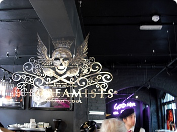
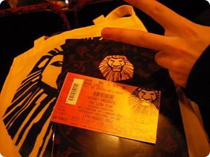
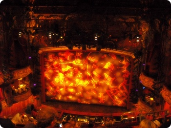

작년 여름 한국서 록키호러픽쳐쇼 뮤지컬보고 처음이다
오랜만에 찾은 Theatre +_+ 오랜만에 뮤지컬!!! +_+
낮에 코벤트가든 좀 일찍도착해서
아이스크림먹으면서 공연시간까지 시간때우기^^;;

ICECREAMISTS
1.이번에도 줄이 너무 길고
2. two scoop 콘 혹은 three scoop 컵 딱 두가지 선택밖에 없는상태
(전에 한번 two scoop콘을 주문해서 먹었는데
이게 콘위에 아이스크림을 엄청 크게 올려줘서;;
반.......이뭐야 1/3도 못먹고 마구 녹아 흘러내리는걸
감당못해서 버린적이 있음;;;; ㅡㅜ)
3.흑;; 이게 무슨 치토스야? 왜이리 먹기힘들어;;
(언젠간 먹고말테다;;;;)
차라리 나중에 take away말고 가게안 테이블앉아서
다른메뉴를 주문해보자 싶어서 이번에도 포기
4.제...젭알 two scoop cup or one scoop메뉴좀 만들어주세요 ;ㅂ;
5.여전히 가게분위기/유니폼은 내취향//헷헷
이래이래 촘 돌아댕기고 구경좀 하다가
시간맞춰서 입장+_+

또다시 등장한 M군 브이 ㅋㅋㅋㅋㅋㅋㅋ
가방이랑 팜플렛 구입

뮤지컬 오랜만일세 ;ㅂ;
싱난다 싱난다~~!!!
뭐 라이온킹 뮤지컬 본사람들은 하나같이 꼭 보라고
추천했었는데 과연 기대를 저버리지 않더군요;ㅂ;
stage design한사람 완전천재라능 ;ㅂ;
애니메이션 장면을 충실하게 재현하고
다양한 동물의 움직임을 표현하는게 정말 대단했습니다 ;ㅂ;b
오랜만에 좋은공연보고와서 기분up 헷헷헷